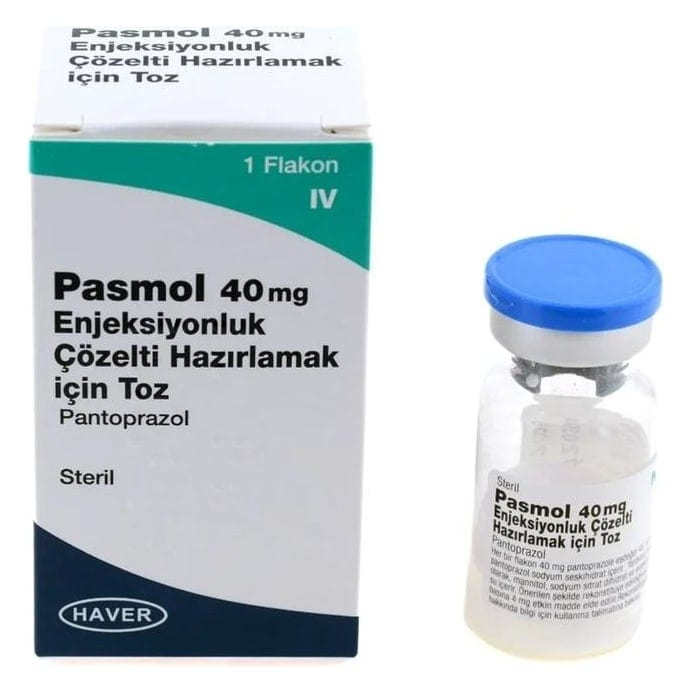

Pasmol 40 mg Enjeksiyonluk Çözelti Hazırlamak İçin Toz, 1 Adet

Ne için kullanılır
KT · Bölüm 1PASMOL enjeksiyonluk çözelti için beyaz veya beyazımsı kek tozdur ve gri kauçuk tıpa ve flip- off aluminyum kapakla kapatılmış Tip I camdan yapılmış şeffaf, renksiz 10 ml’lik flakon içerisinde yer alır.
PASMOL “proton pompası inhibitörü” olarak bilinen ilaçlardan biridir. Midenizde asit oluşumunu azaltır. Midede asit nedeniyle oluşan hastalıkların tedavisinde kullanılır.
PASMOL; • Asidin mideden yemek borusuna kaçışına bağlı yemek borusunda iltihaplanma ve ağrı reflü özofajit • Bağırsakların üst kısmındaki ülser (duodenum ülseri) veya midedeki ülser (gastrik ülser) • Akut (ani başlangıçlı) kanamalı mide veya bağırsakların üst kısmındaki ülserlerde, kanamanın tedavisinde veya kanamanın tekrarlamasını önlemede, • Zollinger Ellison Sendromu gibi midede aşırı asit üretiminin olduğu durumların tedavisinde kullanılır.